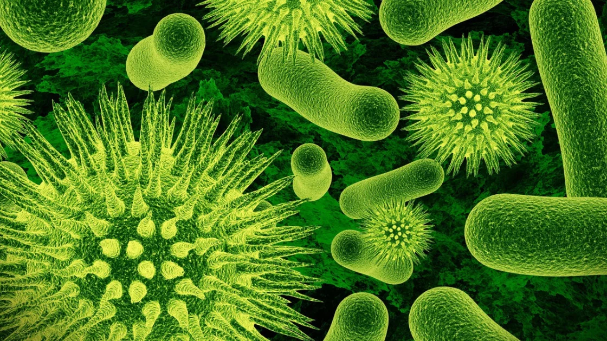
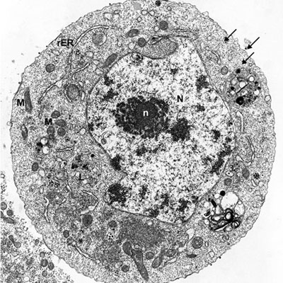
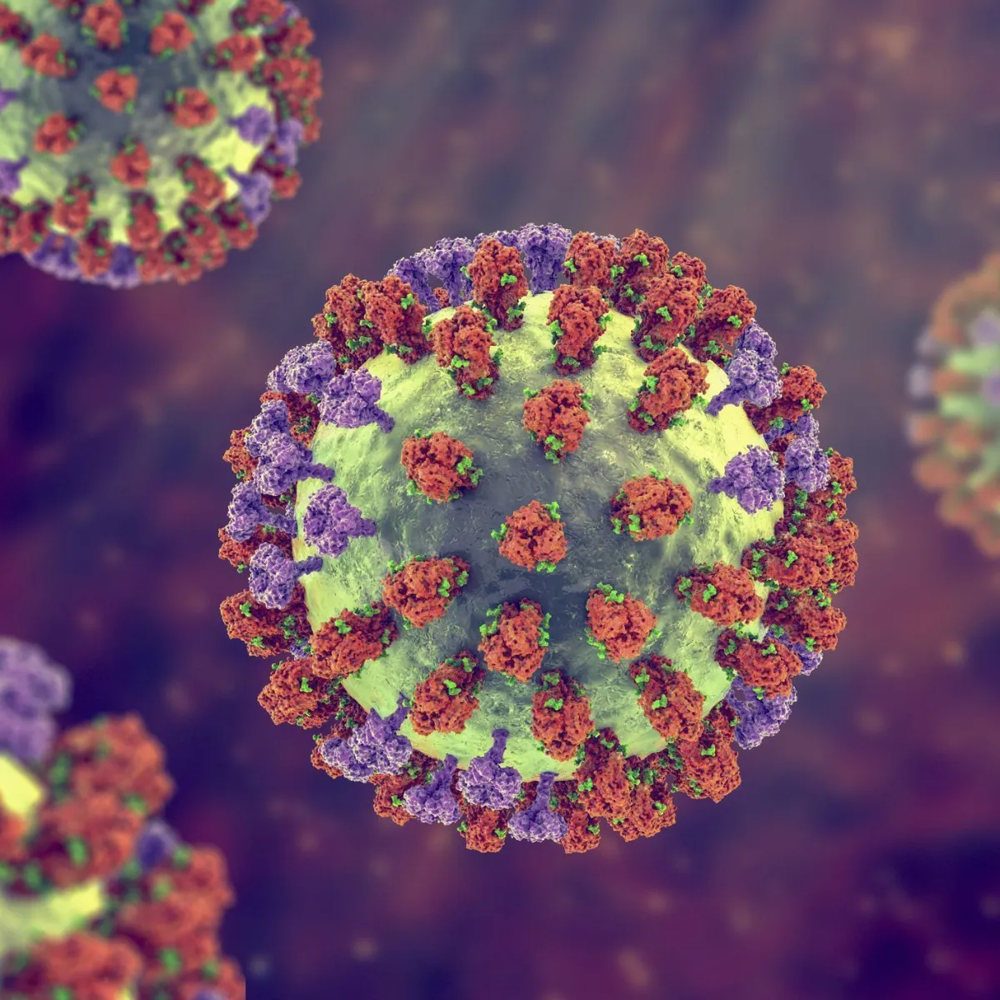
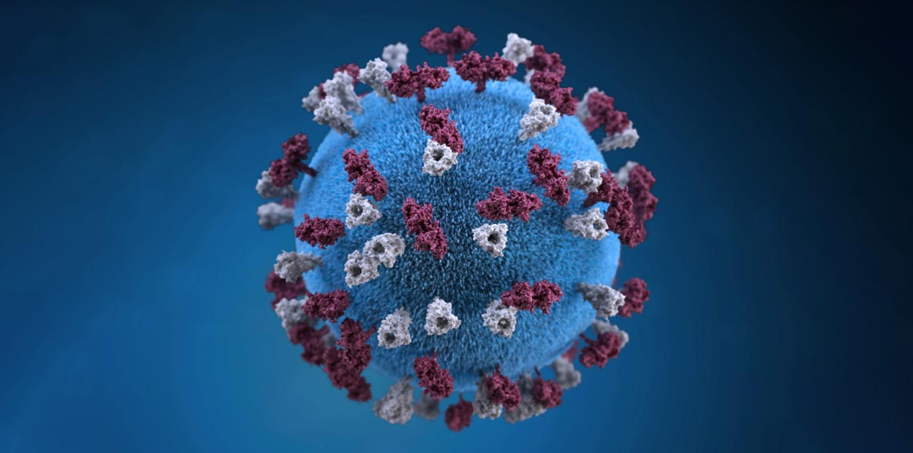
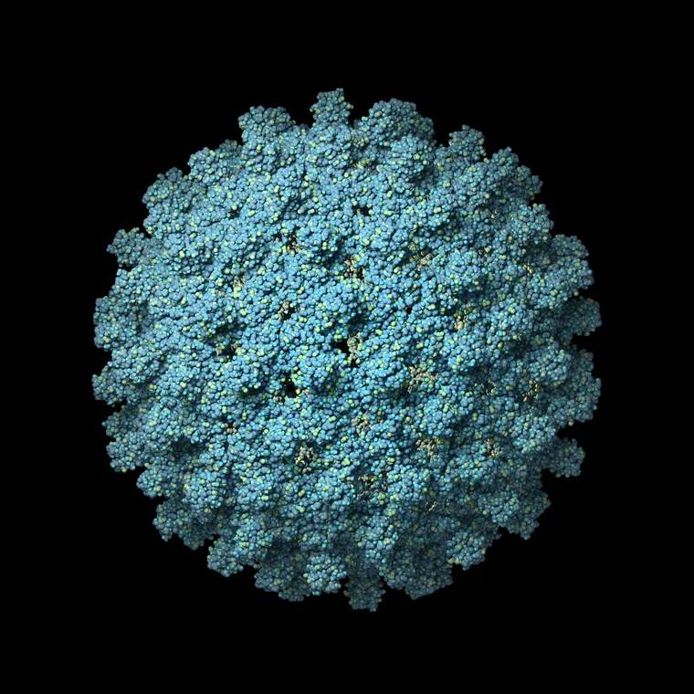
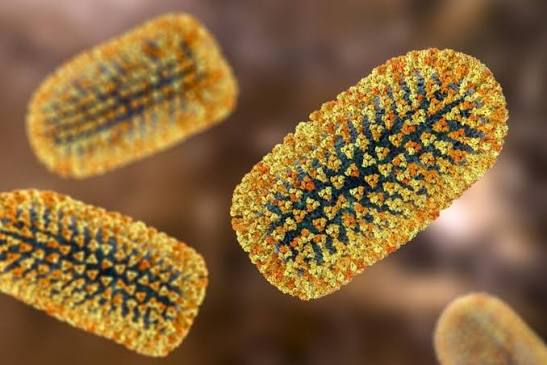

História e Descoberta dos Vírus
Os vírus começaram a ser estudados no final do século XIX. Naquela época, os cientistas perceberam que algumas doenças eram causadas por agentes infecciosos menores do que as bactérias conhecidas.
Um dos primeiros estudos importantes ocorreu durante pesquisas sobre uma doença que afetava plantas de tabaco. Os cientistas descobriram que o agente causador da doença conseguia atravessar filtros capazes de reter bactérias. Isso demonstrou que existia um agente infeccioso muito menor do que qualquer bactéria conhecida.
Com o desenvolvimento da microscopia eletrônica no século XX, tornou-se possível observar os vírus com mais detalhes. A partir desse período, os cientistas passaram a compreender melhor sua estrutura, seu material genético e sua forma de reprodução.
Atualmente, a virologia — área da ciência responsável pelo estudo dos vírus — é fundamental para o desenvolvimento de vacinas, medicamentos antivirais e métodos de diagnóstico.
O que são Virus?
Um vírus é um agente infeccioso microscópico que só consegue se reproduzir dentro das células de um ser vivo (como pessoas, animais, plantas ou bactérias).

Veja como ele funciona de forma simples
- O vírus entra no organismo.
- Ele invade uma célula.
- Usa a "máquina" da célula para produzir cópias de si mesmo.
- As novas cópias infectam outras células.
Estrutura dos Vírus
Os vírus possuem uma estrutura relativamente simples quando comparados às células.
Apesar de existirem diferentes tipos de vírus, muitos possuem alguns componentes básicos.
Material genético
O material genético contém as informações necessárias para a produção de novos vírus.
Dependendo do tipo de vírus, esse material pode ser:
- DNA;
- RNA.
Os vírus geralmente possuem apenas um desses dois tipos de material genético.
Capsídeo
O capsídeo é uma camada formada por proteínas que protege o material genético do vírus.
Além da proteção, o capsídeo pode participar do processo de entrada do vírus nas células do organismo.
Envelope viral
Alguns vírus possuem uma camada externa chamada envelope.
O envelope é formado principalmente por lipídios e proteínas e pode conter estruturas utilizadas pelo vírus para reconhecer e entrar nas células. Nem todos os vírus possuem envelope.
Por exemplo:
- O vírus influenza possui envelope.
- O SARS-CoV-2 possui envelope.
- Outros vírus podem não possuir essa estrutura.
Como os Vírus se Reproduzem?
Os vírus não conseguem se reproduzir sozinhos.
Para produzir novas partículas virais, precisam infectar uma célula. Por isso, são classificados como parasitas intracelulares obrigatórios.
De maneira simplificada, o processo ocorre nas seguintes etapas:
1.Ligação
O vírus reconhece uma célula adequada e se liga a estruturas presentes em sua superfície. Essas estruturas funcionam como uma espécie de "porta de entrada" para determinados vírus.
2.Entrada
Após se ligar à célula, o vírus ou seu material genético consegue entrar no interior da célula. forma como isso acontece varia de acordo com o tipo de vírus.
3. Reprodução do material genético
Dentro da célula, o vírus utiliza recursos celulares para produzir cópias de seu material genético.
4. Produção de proteínas virais
A célula infectada também pode ser utilizada para produzir proteínas necessárias para formar novos vírus.
5. Montagem
As novas partes produzidas começam a se organizar, formando novas partículas virais.
6. Liberação
Os novos vírus deixam a célula e podem infectar outras células. Dependendo do vírus, esse processo pode causar danos ou até a morte da célula infectada.
Resumo:
Vírus
↓
Reconhece a célula
↓
Entra na célula
↓
Utiliza os recursos celulares
↓
Produz material genético e proteínas
↓
Monta novos vírus
↓
Libera novos vírus
↓
Infecta outras células
Formas de Transmissão dos Vírus
Os vírus podem ser transmitidos de diferentes maneiras. A forma de transmissão depende do tipo de vírus.
Transmissão respiratória
Alguns vírus podem ser transmitidos por partículas respiratórias liberadas quando uma pessoa infectada:
- tosse;
- espirra;
- fala;
- respira.
Exemplos:
- Influenza;
- SARS-CoV-2;
- vírus do sarampo.
O SARS-CoV-2, por exemplo, é transmitido principalmente entre pessoas por contato próximo e partículas respiratórias, especialmente em ambientes fechados e pouco ventilados.
Transmissão por vetores
Alguns vírus são transmitidos por outros organismos, chamados de vetores. Um exemplo importante é a dengue.
O vírus da dengue é transmitido principalmente pela picada de fêmeas infectadas do mosquito Aedes aegypti.
Transmissão por sangue e outros fluidos corporais
Alguns vírus podem ser transmitidos pelo contato com sangue ou determinados fluidos corporais.
Esse tipo de transmissão pode ocorrer, dependendo do vírus, por exemplo, por:
- contato com sangue contaminado;
- compartilhamento de objetos perfurantes;
- transmissão sexual;
- transmissão da mãe para o bebê.
Um exemplo importante é o vírus da hepatite B.
Transmissão por animais
Alguns vírus podem ser transmitidos de animais para seres humanos.
A raiva é um exemplo. O vírus pode ser transmitido principalmente por meio da saliva de animais infectados, geralmente quando ocorre uma mordida ou arranhão que possibilita o contato com o vírus.
principais Tipos de Virus :
| Vírus | Doença principal | Forma de transmissão |
|---|---|---|
| DENV | Dengue | Mosquito Aedes |
| Influenza | Gripe | Via respiratória |
| SARS-CoV-2 | COVID-19 | Via respiratória |
| MeV | Sarampo | Via respiratória |
| HBV | Hepatite B | Sangue e outros fluidos corporais |
| RABV | Raiva | Saliva de animais infectados |
Vírus da Dengue (DENV)

O vírus da dengue pertence ao grupo dos arbovírus, ou seja, vírus transmitidos por artrópodes. No Brasil, sua principal forma de transmissão ocorre pela picada da fêmea infectada do mosquito Aedes aegypti.
Existem quatro sorotipos conhecidos:
- DENV-1;
- DENV-2;
- DENV-3;
- DENV-4.
Os sintomas mais comuns incluem febre alta, dor de cabeça, dores musculares e articulares, enjoo e manchas vermelhas na pele. Alguns casos podem evoluir para formas graves, sendo importante rocurar atendimento médico quando houver sinais de alerta.
A prevenção envolve principalmente o combate aos criadouros do mosquito, como recipientes que acumulam água. A vacinação também é uma importante ferramenta de prevenção dentro das recomendações das autoridades de saúde.
Vírus Influenza

Os vírus influenza são responsáveis pela gripe, uma infecção que afeta principalmente o sistema respiratório.
Existem quatro tipos principais:
- Influenza A;
- Influenza B;
- Influenza C;
- Influenza D.
Os tipos A e B estão entre os principais responsáveis pelas epidemias sazonais de gripe em seres humanos.
Os sintomas podem incluir:
- febre;
- tosse;
- dor de garganta;
- dores musculares;
- cansaço;
- dor de cabeça.
A transmissão ocorre principalmente entre pessoas por partículas respiratórias, especialmente em ambientes fechados e pouco ventilados. A vacinação continua sendo uma importante ferramenta para reduzir o risco de formas graves da doença.
Vírus do Sarampo (MeV)

O vírus do sarampo é responsável pelo sarampo, uma doença viral altamente transmissível. A transmissão ocorre principalmente pelo ar e por partículas respiratórias.
Os principais sintomas podem incluir:
- febre;
- tosse;
- coriza;
- olhos irritados;
- manchas vermelhas pelo corpo.
A vacinação é uma das principais formas de prevenção. O sarampo está entre as doenças evitáveis por vacinação reconhecidas pela Organização Mundial da Saúde.
Vírus da Hepatite B (HBV)

O vírus da hepatite B afeta principalmente o fígado.
A infecção pode ser aguda ou persistir por um longo período. Dependendo da evolução, pode causar danos importantes ao fígado. A transmissão pode ocorrer por meio do contato com sangue e determinados fluidos corporais infectados. A prevenção inclui medidas de proteção e vacinação.
A hepatite B está entre as doenças para as quais existem vacinas utilizadas na prevenção.
Vírus da Raiva (RABV)

O vírus da raiva causa uma doença que afeta o sistema nervoso.
A transmissão geralmente ocorre quando a saliva de um animal infectado entra em contato com ferimentos ou mucosas, sendo as mordidas uma forma importante de exposição.
A prevenção após uma possível exposição é extremamente importante e deve ser orientada por profissionais de saúde. A raiva está entre as doenças para as quais existem vacinas.
Como o Sistema Imunológico Combate os Vírus?
O sistema imunológico possui diferentes mecanismos para reconhecer e combater agentes infecciosos. Quando um vírus entra no organismo, o sistema de defesa pode reconhecer estruturas relacionadas ao agente infeccioso e iniciar uma resposta.
Algumas células de defesa ajudam a destruir células infectadas, enquanto outras participam da produção de anticorpos. Os anticorpos são proteínas capazes de reconhecer determinadas estruturas associadas a vírus e ajudar o organismo a combatê-los.
Depois de algumas infecções ou vacinações, o organismo pode desenvolver memória imunológica, permitindo uma resposta mais rápida em futuros contatos com determinados agentes.
Vacinas e Prevenção
As vacinas são uma das ferramentas mais importantes da saúde pública. Elas ajudam o sistema imunológico a reconhecer determinados agentes infecciosos e desenvolver mecanismos de defesa.
As vacinas são utilizadas na prevenção de diversas doenças causadas por vírus, incluindo, entre outras:
- sarampo;
- hepatite B;
- nfluenza;
- COVID-19;
- raiva;
- dengue.
A disponibilidade e as recomendações de vacinação podem variar conforme o país, a idade e a situação de saúde da população.
Além das vacinas, outras medidas de prevenção são importantes:
- lavar as mãos regularmente;
- manter ambientes ventilados quando houver circulação de vírus respiratórios;
- evitar água parada para reduzir a proliferação do Aedes aegypti;
- utilizar medidas de proteção adequadas ao risco de cada doença;
- seguir orientações das autoridades de saúde.
Diferença entre Vírus e Bactérias
Essa seção seria muito interessante no seu site, porque muitas pessoas confundem vírus e bactérias.
| Vírus | Bactérias |
|---|---|
| Não possuem estrutura celular completa | São organismos celulares |
| Precisam de uma célula hospedeira para se multiplicar | Podem se reproduzir sozinhas |
| Possuem DNA ou RNA | Possuem material genético |
| Geralmente são menores que bactérias | Geralmente são maiores que vírus |
| Algumas doenças podem ser prevenidas por vacinas | Algumas doenças bacterianas podem ser tratadas com antibióticos |
Uma informação importante: antibióticos não combatem vírus. Eles são utilizados contra determinadas infecções causadas por bactérias.
Impactos dos Vírus na Saúde Pública
Os vírus podem causar impactos significativos na sociedade. Quando uma doença viral se espalha rapidamente, pode aumentar a procura por hospitais, serviços de saúde e medicamentos.
Além dos impactos na saúde, grandes epidemias podem provocar consequências:
- econômicas;
- sociais;
- educacionais;
- psicológicas.
Por isso, a vigilância em saúde é extremamente importante. No Brasil, ações de vigilância envolvem, entre outras atividades, o monitoramento de arboviroses, doenças imunopreveníveis e doenças emergentes. O acompanhamento da circulação dos vírus permite que autoridades e cientistas desenvolvam estratégias de prevenção e controle.
Conclusão
Os vírus são agentes infecciosos que possuem uma estrutura relativamente simples, mas são capazes de causar importantes efeitos nos organismos que infectam. Como não conseguem se reproduzir de forma independente, precisam utilizar células hospedeiras para produzir novas partículas virais.
Existem diversos tipos de vírus, capazes de infectar seres humanos, animais, plantas e outros organismos. Cada vírus possui características próprias e pode apresentar diferentes formas de transmissão, como pela via respiratória, por vetores, pelo contato com sangue ou pela transmissão entre animais e seres humanos.
O estudo dos vírus é fundamental para a compreensão das doenças infecciosas e para o desenvolvimento de formas de prevenção e controle. A pesquisa científica permite criar vacinas, métodos de diagnóstico e estratégias para reduzir a transmissão de doenças.
Dessa forma, compreender como os vírus funcionam é essencial não apenas para conhecer as doenças que podem causar, mas também para entender a importância da ciência, da vacinação e das medidas de saúde pública na proteção da população.